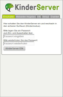
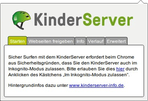
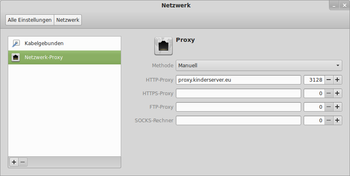

KinderServer
Archivierte Anleitung
Dieser Artikel wurde archiviert, da er - oder Teile daraus - nur noch unter einer älteren Ubuntu-Version nutzbar ist. Diese Anleitung wird vom Wiki-Team weder auf Richtigkeit überprüft noch anderweitig gepflegt. Zusätzlich wurde der Artikel für weitere Änderungen gesperrt.
Anmerkung: Der Betrieb von KinderServer wurde leider am 2.6.2017 eingestellt.
KinderServer  ist ein deutsches Projekt zur Förderung des Kinder- und Jugendschutzes im Internet. Ziel ist es, Erziehungsberechtigten, Angehörigen und pädagogischen Fachkräften eine Möglichkeit zu bieten, den Zugriff auf bestimmte Internetseiten zu beschränken. Grundsätzlich dient dieses Angebot aber nur als ergänzende Maßnahme und kann die Medienerziehung lediglich unterstützen – jedoch nicht ersetzen. Als Zielgruppe werden Kinder bis ca. 12 Jahren angegeben. Vor dem Einsatz sollten die Nutzungsbedingungen und Fragen & Antworten aufmerksam gelesen werden.
ist ein deutsches Projekt zur Förderung des Kinder- und Jugendschutzes im Internet. Ziel ist es, Erziehungsberechtigten, Angehörigen und pädagogischen Fachkräften eine Möglichkeit zu bieten, den Zugriff auf bestimmte Internetseiten zu beschränken. Grundsätzlich dient dieses Angebot aber nur als ergänzende Maßnahme und kann die Medienerziehung lediglich unterstützen – jedoch nicht ersetzen. Als Zielgruppe werden Kinder bis ca. 12 Jahren angegeben. Vor dem Einsatz sollten die Nutzungsbedingungen und Fragen & Antworten aufmerksam gelesen werden.
Der Name selbst kann missverstanden werden. Es handelt sich nicht um ein Programm bzw. einen Dienst zum Installieren auf dem eigenen Rechner, sondern um einen entfernten Proxy-Server, der sich um die Filterung von Internetadressen nach Positivlisten kümmert. Die eigentliche Filterliste ist nicht öffentlich, aber der Proxy steht allen Interessierten zur Verfügung und kann kostenlos genutzt werden. Zugelassen sind alle Internetadressen der Kinderportale Blinde Kuh , fragFinn und Seitenstark sowie alle Webseiten, die eine spezielle Alterskennzeichnung benutzen. Andere Adressen werden mit einem für Kinder verständlichen Hinweis blockiert.
Getragen bzw. gefördert wird das Projekt vom Bundesministerium für Familie, Senioren, Frauen und Jugend , Jugendschutz.net , dem Verband der deutschen Internetwirtschaft e.V. und den oben genannten Betreibern von Blinde Kuh, fragFINN und Seitenstark.
Nutzung¶
|  | |
| Blockierte Seite | Einstellungen |
Grundsätzlich gibt es unter Ubuntu zwei Möglichkeiten, KinderServer zu nutzen:
als Browser-Erweiterung. Diese Verwendungsart ist (bei älteren Kindern) nicht ganz so sicher, aber dafür besonders einfach einzurichten. Allerdings ist eine Erweiterung bisher nur für die Webbrowser Firefox und Chromium/Google Chrome verfügbar.
als vorgelagerter oder systemweiter Proxy-Server. Dies ist die sichere Variante und nicht browser-abhängig, erfordert aber mehr Hintergrundwissen.
Browser¶
Chromium/Google Chrome¶
|  |
| Chromium/Google Chrome |
Die Erweiterung für Chromium/Google Chrome ist im Webstore  erhältlich. Nachdem das Addon installiert wurde, findet man in der Navigationsleiste ein kleines Symbol . Über einen
erhältlich. Nachdem das Addon installiert wurde, findet man in der Navigationsleiste ein kleines Symbol . Über einen  Linksklick auf dieses gelangt man zum Einstellungsdialog. Im Reiter "Starten" klickt man auf den blau hervorgehoben Link "hier" innerhalb des Textes und gelangt so zu chrome://extensions/. Hier setzt man das Häkchen beim Punkt "Im Inkognito-Modus zulassen". Die Erweiterung kann nun konfiguriert und aktiviert werden.
Linksklick auf dieses gelangt man zum Einstellungsdialog. Im Reiter "Starten" klickt man auf den blau hervorgehoben Link "hier" innerhalb des Textes und gelangt so zu chrome://extensions/. Hier setzt man das Häkchen beim Punkt "Im Inkognito-Modus zulassen". Die Erweiterung kann nun konfiguriert und aktiviert werden.
Firefox¶
Die Firefox-Erweiterung kann über das Add-on Verzeichnis von Mozilla.org installiert werden. Nach der Installation des Addons ist der KinderServer abgeschaltet und muss zuerst noch aktiviert werden. Nach dem Start nistet sich ein ein kleines Symbol in der Navigations-Symbolleiste ein. Über einen Linksklick können die gewünschten Einstellungen vorgenommen werden.
Einstellungen¶
| Konfiguration | |
| Verfügbare Optionen | Bedeutung |
| "Einschalten" / "Ausschalten" | KinderServer (de)aktivieren. Es kann ein Passwort zur (Ent)Sperrung angegeben werden. |
| "Webseiten freigeben" | In diese Liste können Internetseiten eingetragen werden, welche von KinderServer nicht freigeschaltet worden sind, um dem Kind den Zugang trotzdem zu gewähren. Maximal 46 Einträge sind möglich. |
| "Verlauf" | Anzeige der letzten 5 Aktionen von KinderServer. |
| "Erweitert" | Liste der zusätzlich verwendbaren Proxys, welche z.B. beruflich benötigt werden. Der Zugriff ist nur im Erwachsenenmodus möglich. Der KinderServer ist im Kindermodus immer eingeschaltet. |
Ein aktivierter KinderServer ist am grünen Fahrradhelm zu erkennen.
Proxy¶
Bei der Nutzung als Proxy gibt es mehrere Möglichkeiten:
Eintrag im verwendetem Browser
Eintrag als systemweiter Proxy (für einen einzelnen Rechner)
Verwendung der Filterliste in einem eigenen Proxy-Server (als vorgelagerter Proxy), z.B. in Grundschulen.
Die konkrete Internetadresse (URL) lautet in allen Fällen:
proxy.kinderserver.eu:3128
Hinweis:
Für System-Aktualisierungen kann es bei 2. und 3. erforderlich sein, eine eigene Liste mit Ausnahmen erstellen oder die Proxy-Nutzung temporär zu deaktivieren. Siehe auch Problembehebung.
Manuell setzen¶
Ist für den eingesetzten Browser keine Erweiterung verfügbar, kann man den zu verwendenden Proxy auch in den jeweiligen Einstellungen des Browsers konfigurieren. Diese Methode hat den Nachteil, dass sie mit entsprechenden Kenntnissen einfach wieder rückgängig gemacht werden kann (genauso wie die Nutzung der oben genannten Browser-Erweiterungen). Wie man das verhindern kann, wird im nächsten Abschnitt erläutert.
Systemweiter Proxy¶
 Die konkrete Vorgehensweise ist zum Teil von der eingesetzten Desktop-Umgebung abhängig und wird im Artikel Proxyserver ausführlich beschrieben. Auf diese Weise lassen sich auch andere Programme kontrollieren. Allerdings heißt systemweit nicht, dass Programme verpflichtet sind, diese Vorgabe zu verwenden. Daher muss man je nach Programm und Alter der Kinder noch dafür sorgen, dass die Proxy-Einstellungen nicht einfach deaktiviert werden. Für drei der am häufigsten eingesetzten Browser gibt es eigene Anleitungen:
Parent Proxy¶
Wer bereits einen Proxy-Server einsetzt – idealerweise auf einem separaten Rechner oder Router – kann mehrere Proxys in Reihe schalten. Die konkrete Vorgehensweise hängt vom jeweils verwendeten Programm ab. Diese Variante ist die sicherste. Man sollte trotzdem im Hinterkopf behalten, dass hundertprozentige Sicherheit eine Utopie ist. Es gibt Programme, die so konzipiert sind, dass sie auch solche Schutzmaßnahmen aushebeln können (z.B. Skype).
Um an einem praktischen Beispiel zu zeigen, wie man diese Variante auch auf einem lokalen PC verwenden kann, soll der KinderServer-Proxy als "Parent Proxy" für Privoxy dienen. Nach der Installation von Privoxy wird der KinderServer über die Datei /etc/privoxy/config vorgeschaltet:
forward / proxy.kinderserver.eu:3128
Nun leitet Privoxy ausnahmslos alle Anfragen weiter. Da der KinderServer-Proxy sehr rigide filtert, kann man z.B. die Wikipedia in Privoxy als Ausnahme definieren:
forward / proxy.kinderserver.eu:3128 ## alle Anfragen an parent proxy weiterleiten forward .wikipedia.org . ## Ausnahme, nicht weiterleiten
Da Privoxy selbst als Inhaltsfilter arbeitet, werden dennoch Suchergebnisse von fragFINN blockiert, die vom KinderServer als akzeptabel klassifiziert werden. Dann teilt man Privoxy über die Datei /etc/privoxy/user.action mit, in diesem speziellen Fall nicht einzuschreiten:
{ -block }
.fragfinn.de
Im Browser wird nun, entweder manuell oder systemweit, Privoxy als erste Anlaufstelle definiert. Für HTTP- und HTTPS-Verbindungen lautet der Eintrag localhost:8118. HTTPS wird aber automatisch vom Kinderserver blockiert – zumindest solange, bis man auch hier eine Ausnahme in Privoxy einrichtet:
forward / proxy.kinderserver.eu:3128 forward :443 .
Kritik¶
Die folgenden Kritikpunkte richten sich ausdrücklich nicht gegen das Engagement der um Aufbau des KinderServers Beteiligten, sondern sollen nochmal die Grenzen des Projekts vor Augen führen.
Überspitzt ausgedrückt könnte man eine Proxy-Nutzung mit der Vorgehensweise vergleichen, das Kinderzimmerfenster mit einer transparenten Fototapete zu überkleben, um ständigen Sonnenschein vorzutäuschen. Manche EDV-erfahrene Eltern lehnen daher einen Proxy generell ab und begleiten stattdessen ihre Kinder bei Ausflügen ins Internet persönlich.
Daneben sollte man aus psychologischer Sicht nie vergessen, dass jedes Verbot früher oder später neugierig macht. Dabei besteht schnell die Gefahr, ein Wettrüsten um die uneingeschränkte Nutzung des Internets anzuzetteln. Oder man wiegt sich in falscher Sicherheit, was genauso fatal sein kann. Vor dem Hintergrund des Datenschutzes ergibt sich ein weiteres Problemfeld: der Betreiber eines Proxy-Servers ist in der Lage, alle Aktivitäten mitzuschneiden. Eine Nutzung setzt daher immer auch Vertrauen in die Integrität des Betreibers voraus. Die scheint durch das Engagement namhafter Beteiligter zwar gegeben zu sein, aber wer kontrolliert hier eigentlich wen? Was ist an www.gugel.de gefährlich?
Problembehebung¶
Verlangsamter Internetzugriff¶
Obwohl über die physikalische Hardware hinter dem KinderServer keine konkreten Angaben vorliegen, ist konzeptionell bedingt unter Umständen mit einer verringerten Geschwindigkeit des Internetzugangs zu rechnen. Denn alle eingegebenen Internetadressen werden zuerst an den Serverstandort beim DE-CIX in Frankfurt übermittelt, und erst nach einer Freigabe dort wird die jeweilige Internetseite angezeigt. Bei einem Ausfall des KinderServer-Proxys ist der Internetzugang praktisch blockiert.
Systemaktualisierungen¶
Um der Paketverwaltung ungehinderten Zugriff auf das Internet zu gewähren, erstellt bzw. bearbeitet man die Datei /etc/apt/apt.conf mit Root-Rechten und ergänzt folgende Zeile:
1 | Acquire::http::proxy "false"; |
Diese Angabe ist nur sinnvoll, wenn man einen systemweiten Proxy eingestellt hat.
Links¶
Intern¶
 Übersichtsartikel zur Einrichtung eines kindgerechten Computers und
Übersichtsartikel zur Einrichtung eines kindgerechten Computers undExtern¶
Age-Label.de
- Selbstklassifizierung von WebseitenBaustelle KinderServer
- heise News, 02/2013Stellungnahme Kinderserver
- 03/2013
OpenDNS - kommerzieller Anbieter
- Erstellt mit Inyoka
-
 2004 – 2017 ubuntuusers.de • Einige Rechte vorbehalten
2004 – 2017 ubuntuusers.de • Einige Rechte vorbehalten
Lizenz • Kontakt • Datenschutz • Impressum • Serverstatus -
Serverhousing gespendet von